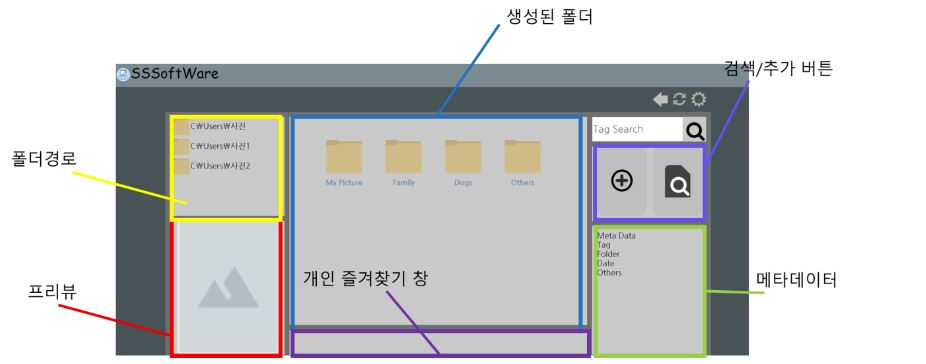
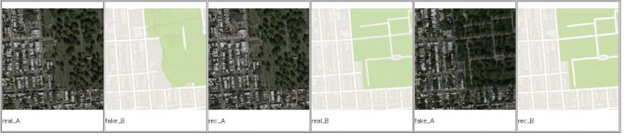

Ray Tracing을 이용한 Mirror Room scene 구현
Octree를 이용하여 최적화 후 성능 비교.
결과적으로 Octree를 이용한 Scene이 8배 빠른 속도 관찰됨
Interactive Visualization
GPU 기반 파티클 시스템 구현 화면
CUDA 에서 제공하는 샘플코드를 기반으로 파티클 시스템 물리환경 구현
파티클 개수:10000개
Sky Box 구현 및 구름사진 Texture Mapping
토네이도 Path Following 구현을 위해 파티클별로 원형궤도를 따라가는 힘과 위로 상승하는 힘의 합력을 부여함
Project Name : SSS(Simple Smart System)
Goal : 초보자가 사진을 체계적으로 분리할 수 있으며 직관적으로 분류 및 검색이 용이하도록 하는 소프트웨어
Device & Platform : 컴퓨터에서 사용할 수 있도록 구현
Development Language: HTML5, css, javascript
Program View:
 Explanation PPT Final Report Final Implementation Source
GAN Experience
GAN을 이용하여 이미지 생성 및 Cycle GAN으로 음성 및 이미지 생성
아래는 위성 지도와 구글 맵을 이용하여 Cycle GAN Architecture를 통해 Fake Map과 Fake Picture를 생성한 사진이다.
 Final Report download Link